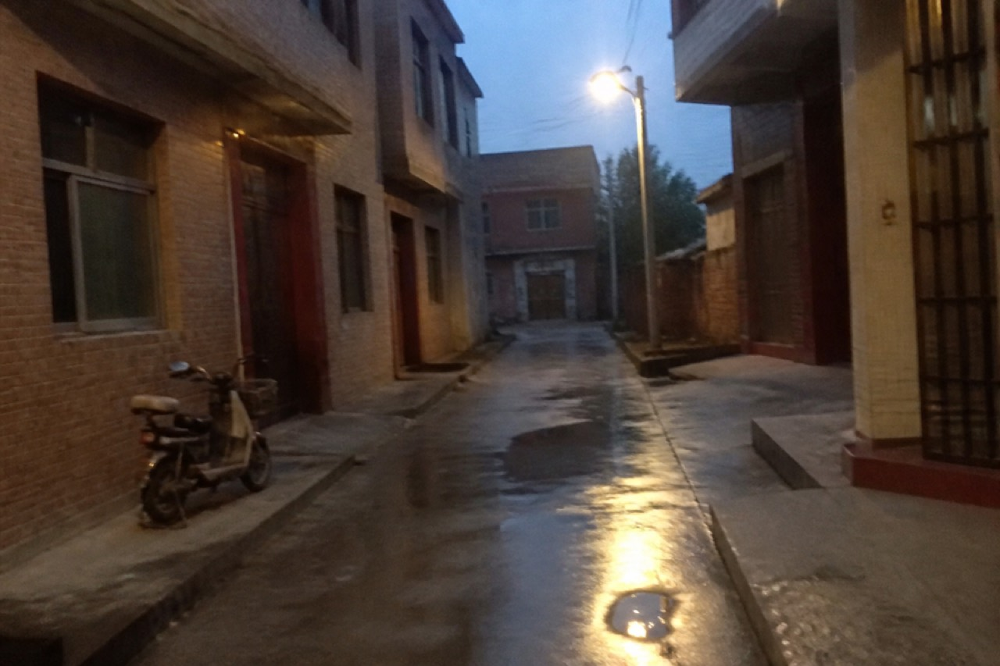

Still on file: porch light after dusk. Shop-front glyphs on the JPEG stay; this line is the desk copy.
On Official-Road Street this inn is the one still lit after midnight. The livestock market has packed up. Two tables left, drinking tea. The east-wing door has a scrap that used to say we copy papers. Half the ink is gone. The inn does not handle yin or yang. It leaves the lamp for people who write.
Tonight the counter has a yellow slip Sun Xiulan pressed there herself, letters jammed together. It asks the inn to tell the east wing: the Qian house has a rush slip, and the person has already been walked to the road-pass room door. The inn did not take it. They said the east wing has its own desk.
Notice board, third line, still has this inn copying a road pass — the old word is luyin. Paper from two years ago. The edge curls. Those two words go in the bag. The bag is an east-wing rule, not a menu.
Rooms are full. No extra cots for walk-ins. Someone sat at the yard stone table. Cups not collected. The fourth nav item, Road-pass desk, opens no page. The owner says that column stopped last year. Business goes to the duty desk.
- Address: north of Official-Road Street mouth, Official-Road Town, Shijin County
- One porch light after dark
- The phone-book line was scraped out with a fingernail
Links: Taian paper-horse shop county hospital ER Shijin Evening local